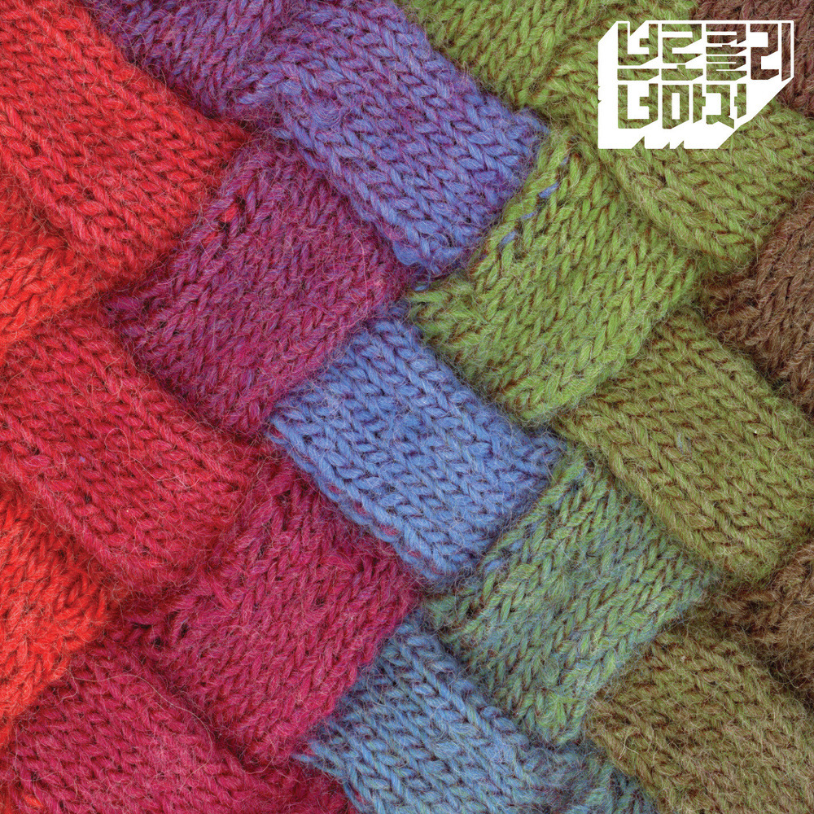

안녕하세요 라보엠입니다.
오늘은 브로콜리너마저의 감성적인 겨울노래 유자차에 대해 소개해드리려고 합니다. 이 곡은 겨울철마다 우리의 마음을 따뜻하게 해주는 특별한 노래입니다. 유자차는 브로콜리너마저의 첫 번째 정규 앨범 에 수록된 곡으로, 2008년에 발매되었습니다. 이 앨범은 약 4만 장의 판매고를 올리며 스테디셀러 반열에 오르는 놀라운 성과를 거두었습니다.
브로콜리너마저는 윤덕원(베이스, 보컬), 잔디(키보드), 류지(드럼)로 구성된 4인조 모던록 밴드입니다. 이들은 참신한 가사와 멜랑꼴리한 '청춘의 사운드'로 많은 사랑을 받아왔습니다.

브로콜리너마저 - 유자차
유자차는 잔잔한 피아노, 기타 선율과 부드러운 보컬이 어우러져 따뜻한 분위기를 자아냅니다. 특히 기타의 연주가 곡의 감성을 더욱 풍부하게 만들어줍니다. 브로콜리너마저 특유의 서정적인 멜로디와 감성적인 가사가 완벽한 조화를 이루어, 듣는 이의 마음을 편안하게 해줍니다.
유자차는 단순한 음료 이상의 의미를 담고 있습니다. 이 노래는 과거의 아픔을 치유하고 새로운 시작을 향해 나아가는 희망의 메시지를 전달합니다.
이 차를 다 마시고 봄날으로 가자
이 구절은 노래의 핵심 메시지를 담고 있습니다. 유자차를 마시며 마음의 상처를 치유하고, 그 후에는 새로운 시작, 즉 '봄날'을 향해 나아가자는 의미입니다.
유자차 가사
1.
바닥에 남은 차가운 껍질에
뜨거운 눈물을 부어
그만큼 달콤하지는 않지만
울지 않을 수 있어
온기가 필요했잖아
이제는 지친 마음을 쉬어
이 차를 다 마시고 봄날으로 가자
2.
우리 좋았던 날들의 기억을
설탕에 켜켜이 묻어
언젠가 문득 너무 힘들 때면
꺼내어 볼 수 있게
그때는 좋았었잖아
지금은 뭐가 또 달라졌지
이 차를 다 마시고 봄날으로 가자
이 차를 다 마시고 봄날으로 가자
유자차의 가사는 상실과 치유, 그리고 희망을 아름답게 표현하고 있습니다.
바닥에 남은 차가운 껍질에
뜨거운 눈물을 부어
그만큼 달콤하지는 않지만
울지 않을 수 있어
이 구절은 아픔을 극복하는 과정을 유자차를 만드는 과정에 비유하고 있습니다. 차가운 껍질은 우리의 상처를, 뜨거운 눈물은 그 상처를 치유하는 과정을 의미합니다. 비록 완벽히 달콤하지는 않더라도, 이 과정을 통해 우리는 더 이상 울지 않을 수 있게 됩니다.
우리 좋았던 날들의 기억을
설탕에 켜켜이 묻어
언젠가 문득 너무 힘들 때면
꺼내어 볼 수 있게
이 부분은 좋았던 추억들을 소중히 간직하는 것의 중요성을 말합니다. 마치 유자청을 만들 때 유자와 설탕을 켜켜이 쌓아두듯, 우리도 좋은 기억들을 차곡차곡 쌓아두어 힘들 때 꺼내볼 수 있게 해야 한다는 메시지를 전달합니다.
맺음말
유자차는 발매 이후 많은 사랑을 받아왔습니다. 특히 겨울철마다 많은 이들의 플레이리스트에 빠지지 않고 등장하는 곡이 되었죠. 이 노래는 마치 겨울철 우리의 마음을 따뜻하게 해주는 실제 유자차처럼, 듣는 이들에게 따뜻한 위로와 온기를 전해줍니다.
브로콜리너마저는 이 곡을 통해 자신만의 독특한 음악 세계를 구축했고, 이는 이후 그들의 음악 활동에도 큰 영향을 미쳤습니다.
이 곡은 우리에게 과거의 아픔을 받아들이고, 그것을 발판 삼아 새로운 시작을 향해 나아갈 용기를 줍니다.
이제 겨울도 끝무렵에 이르고 있습니다. 따뜻한 유자차 한 잔과 함께 이 노래를 들어보며 함께 봄날으로 가면 좋겠습니다 .